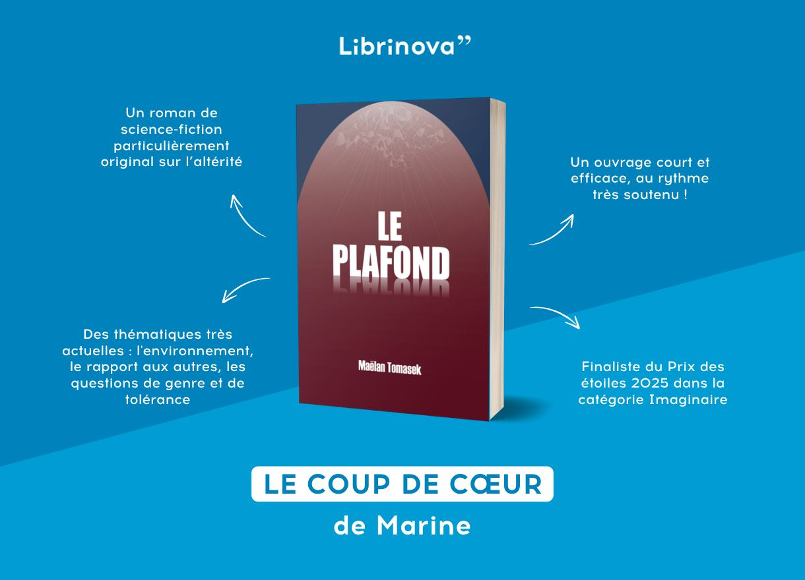
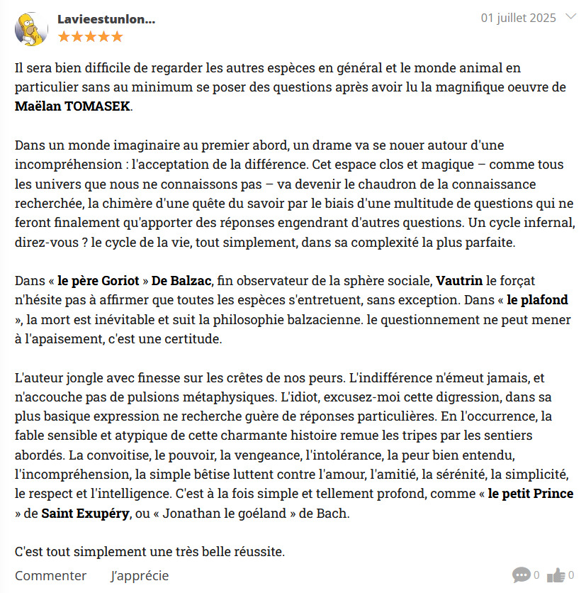
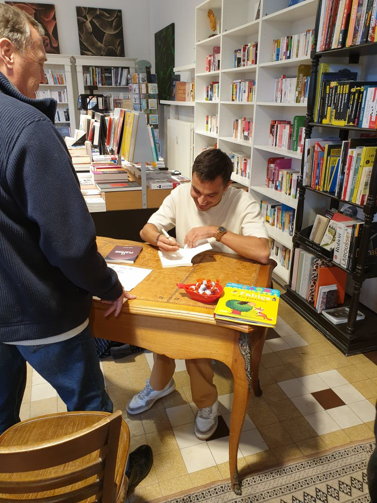

About My Books
One thing that can help push the limits of science is imagination. Combining my scientific background with storytelling, I write fiction that invites the readers to question their assumptions about our world, who we are as a species and where we want to go. We are not alone on this planet, and every single story deserves to be told.
Le Plafond - The Ceiling

Le Plafond
Science-fiction novel exploring how we react to difference
There, in the Around, danger lurks. In the Around, the People leads a peaceful existence, suspended between the Ground and the Ceiling. But a threat is growing in the shadows: death is approaching. The Others are coming. Faced with this imminent danger, there is only one question, and there will be only one answer: are the Others allies or enemies?
🏆 Shortlisted for the Librinova Star Prize 2025
News
March 2026
🏆 SHORTLISTED FOR THE LIBRINOVA STAR PRIZE 2025
My novel just got shortlisted for the Librinova Star Prize 2025! From 1400 novels, only 70 have been selected for the final round. I am so proud of being one of them.
Check out what the Librinova team has to say about it!

January 2026
📰 IN THE NEWS
My novel features in an article of the French newspaper La Voix Du Nord.
My novel is making local news! I had such an amazing time talking about it with a great journalist.
Check out the article below!
Read on the newspaper's website →October 2025
💬 AMAZING REVIEW
Recent review of my novel from an anonymous reader.
I've just had my first reviews from anonymous readers! I could not have imagined such a better comment. Being compared to the Little Prince when my first name literally means "little prince" is just the cherry on top. Readers do write better than writers!
Thank you to everyone who took the time to read my novel and share their thoughts.

October 2025
✍️ SIGNING SESSION AT LA LIBRAIRIE, DUNKIRK
I did my very first signing session at one of my favourite bookstores in my hometown: La Librairie, in Dunkirk.
Thanks to everyone who came by, whether familiar or unfamiliar faces, and thanks to Christophe who enabled me to have this wonderful moment. All copies were sold, I could not have dreamt of a better start for my novel!
